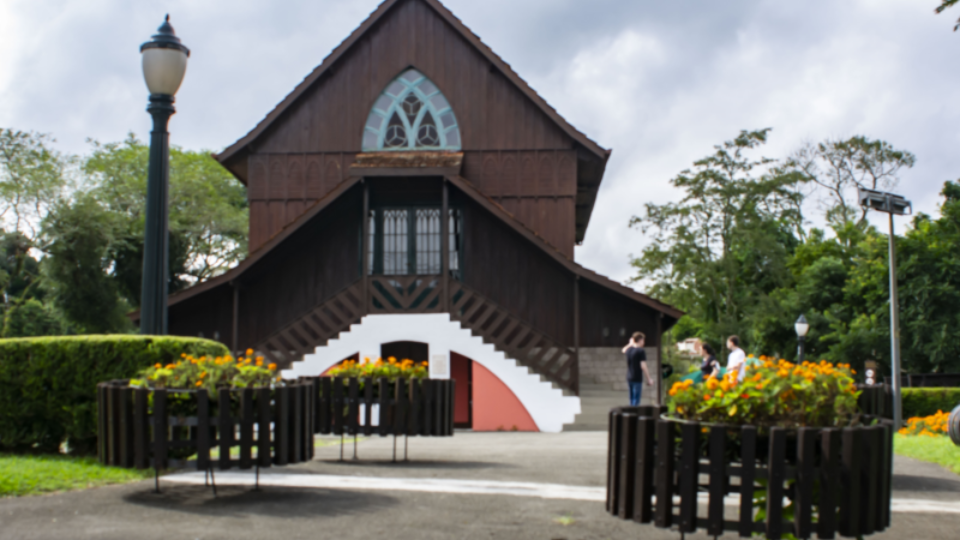
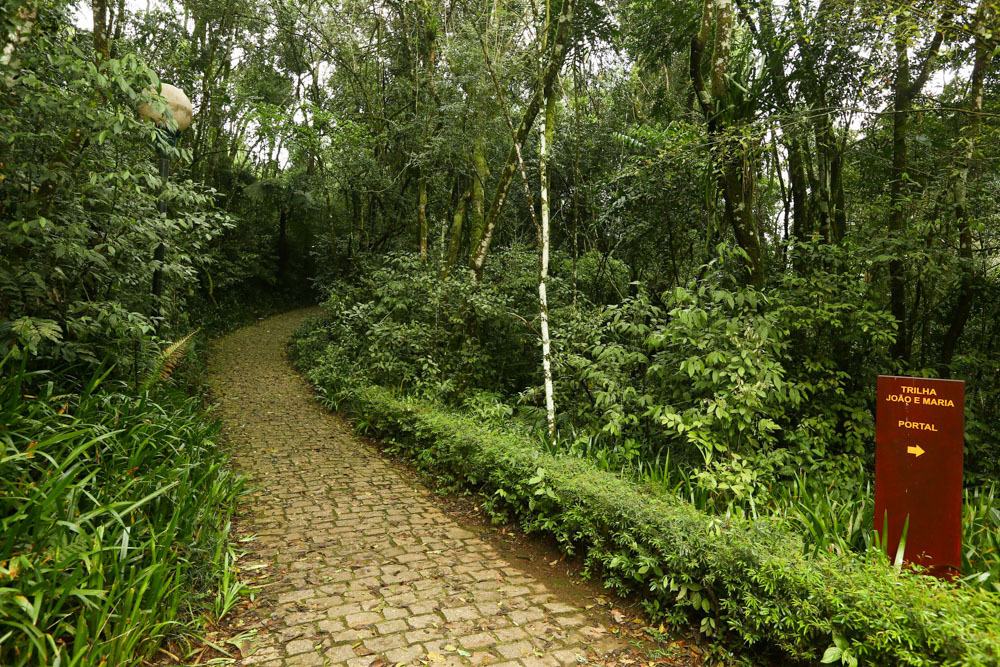

Vamos ver tudo sobre um dos monumentos historicos de Curitiba: Bosque Alemão
O Bosque Alemão é um dos principais monumentos históricos e turísticos de Curitiba. Inaugurado em 1996, foi criado para homenagear os imigrantes alemães que contribuíram para o desenvolvimento da cidade. Localizado no bairro Vista Alegre, o bosque reúne áreas de mata nativa, trilhas, mirantes e atrações culturais, como a Casa Encantada, o Caminho de João e Maria e o Oratório Bach. Além de preservar a história e a cultura da imigração alemã, o local promove lazer, educação ambiental e contato com a natureza, sendo um importante patrimônio cultural de Curitiba.

História do Bosque Alemão
O Bosque Alemão foi inaugurado em 1996, em Curitiba, para homenagear os imigrantes alemães que chegaram à cidade a partir do século XIX e contribuíram para seu desenvolvimento econômico, cultural e social. Construído em uma área de mata nativa no bairro Vista Alegre, o bosque preserva elementos da cultura alemã por meio de construções inspiradas na arquitetura típica, como o Portal da Casa Mila e o Oratório Bach, além de atrações como o Caminho de João e Maria e a Casa Encantada. Atualmente, o Bosque Alemão é um importante espaço de preservação histórica, cultural e ambiental, recebendo visitantes para atividades de lazer, turismo e educação.

A cultura do Bosque Alemão para os Curitibanos
O Bosque Alemão tem grande importância para a cultura curitibana por preservar e valorizar a história dos imigrantes alemães que ajudaram no desenvolvimento de Curitiba. O local mantém vivas as tradições dessa comunidade por meio de sua arquitetura, monumentos e atrações culturais, como o Caminho de João e Maria e o Oratório Bach. Além disso, oferece um espaço para lazer, educação ambiental e contato com a natureza, fortalecendo a identidade cultural da cidade e incentivando a preservação de seu patrimônio histórico.

Curiosidades sobre o bosque Alemão
curiosidades 1
O Bosque Alemão, inaugurado em 1996 em Curitiba, é um parque de 38 mil m² de mata nativa dedicado a celebrar a tradição germânica e a literatura dos irmãos Grimm. Seu maior destaque é a trilha que narra o conto de João e Maria em painéis de azulejo, levando os visitantes até a Casa da Bruxa, uma biblioteca infantil com contação de histórias. O parque conta ainda com o Oratório de Bach, uma sala de concertos que replica uma antiga igreja de madeira, a Torre dos Filósofos, um mirante de 15 metros com vista panorâmica para a cidade, e um portal que reproduz a fachada da histórica Casa Mila.
curiosidades 2
O Bosque Alemão funciona diariamente, das 8h às 20h, com entrada gratuita, enquanto a Casa da Bruxa abre de terça a domingo, das 8h às 17h, com contações de histórias nos finais de semana e feriados às 9h30, 11h, 14h e 16h. Para chegar ao parque, localizado no bairro Vista Alegre, a opção mais prática é a Linha Turismo (Parada 13), mas também é possível utilizar os ônibus urbanos convencionais Interbairros II ou Jardim Mercês/Guanabara. Uma dica estratégica de visitação é iniciar o passeio por cima, na Rua Nicolo Paganini, permitindo que você percorra a trilha de João e Maria e as atrações fazendo todo o caminho em descida até o portal inferior.